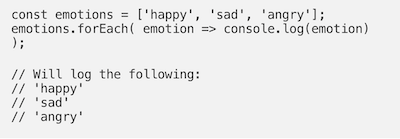
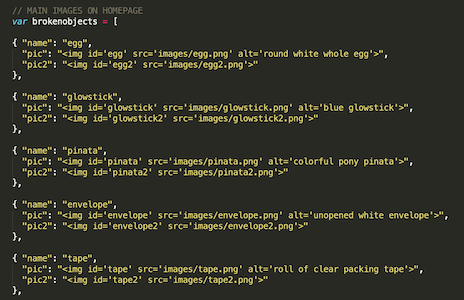
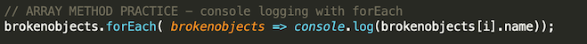
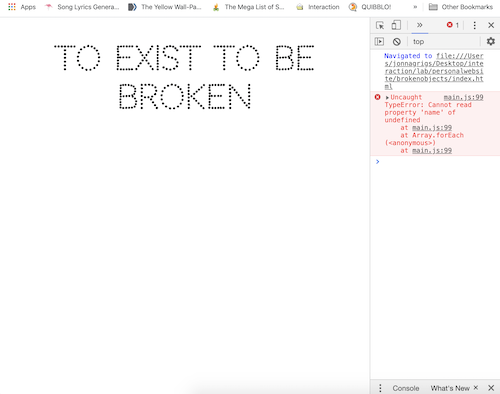
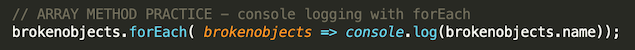
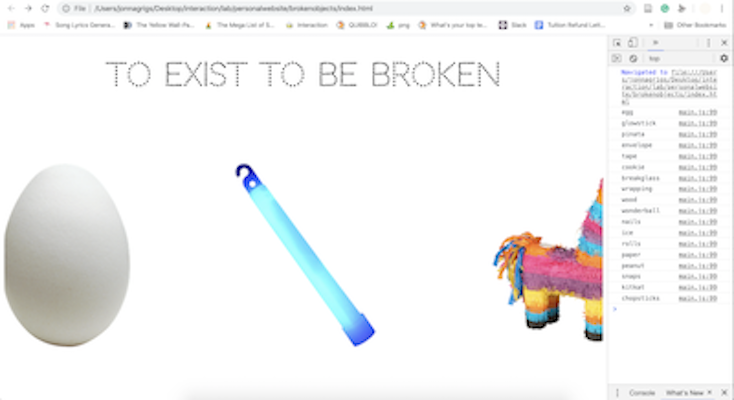
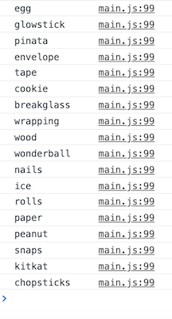

I decided I wanted to try to try an array method that would print in console since I've sort of neglected the console since the last project and it wouldn't disrupt my project too much. So I practiced this using the .forEach() method. Here is the example I was looking at:

I knew the first line would be replaced with my main array of images I was already working with. Here is a piece of that said array:

I was unsure if I had to replace 'var' with 'const' since that is what the example had. But I looked it up and found out the two terms are used for very similar things, I tried out both and they worked the same so I kept it as 'var.' I'm not exactly sure when to use one instead of the other still?
Next I had to change the second line of example code to work with my brokenobjects array. In order to do this I changed replaced their array name (emotions) with mine (brokenobjects). And I also decided I wanted to print just the name of each of my objects in console instead of printing the entire array for each object, so I changed the bit after console log to (brokenobjects[i].name). Like this:

Which broke my site and showed up like this:

I then re-examined the situation and realized that the [i] was unnecessary in a forEach() function so I removed that and tried again with this code:

And that left my site and console looking like this:

Much better!
My current feeling about the parasite project is: intimidated. But I would like to express a great appreciation for how the homework assignments have been constructed. The last few studio classes have left me feeling quite confused and beriddled. (I'm just still pretty uncomfortable working in the console and feel I need a lot more practice before I will get comfortable with it. But I'm aware I will be getting a lot of practice with it very soon). But the way we were taught javascript and THEN jQuery in lab makes me better understand the similarities and differences of the two. I also appreciate how we were prompted to edit an already existing html page. This not only makes the homework a lot more reasonable for the timeframe we have to do it, but it also eliminates the intimidation of the blank page.
I think the reason I feel so much more confused after each studio class and less so after each lab class is because I would not consider myself a natural-born coder. Each new thing we learn does not just automatically click in my brain as it might for a handful of my classmates. In studio we tend to jump right into doing coding excersizes, which would be fine if I didn't tend to forget certain information after a single day (like the difference between js and jQuery formatting). But in lab I really like how we all code together line by line and all practice on the same webpages. I am already planning on looking back on a lot of my lab notes to use for the parasite project (I know- that's the point!) But I'm still confused about console and if the jQuery will from our java files will translate directly to it or if there's some kind of special console format? I don't think there is, but the code just looks so different to me when it's in the console, maybe that's what throws me off.
In regards to the reading, I have most certainly run into StackOverflow, very early into my first semester learning code. I think the approach of manually writing down each piece of code and explaining it to yourself is a piece of advice that could really help me in the future, since I consider myself a very analog worker most of the time. For the most part what the author was saying sounded pretty obvious on the surface, but I think it is actually a good reminder to check yourself, as it is easy to get lost and easily frustrated when a piece of code doesn't work. That being said, I wonder how well that method would actually work considering I am STILL confused about how exactly some pieces of code I use all the time work. Like functions. I know that they work, but understanding exactly how is something I'm still not 100% on.
I'm not going to lie, javascript is very confusing. I feel as though class is getting more and more fast paced. But I know from past experience how much of learning code is just googling stuff, which I am certainly making use of. I was worried after last class that I wouldn't be able to complete the homework assignment because I was semi-struggling with the end-of-class-tasks, especially just getting started on them (that's the hardest part). But I am very thankful for the w3schools links that were provided in the follow up email because those refreshed my memory a bit. Even though I got the webpage to do some interesting things that I like, I still don't know if I'm using functions correctly.
And another piecee of trouble I ran into doing the homework was understanding how to impliment the javascript on its own seperate js file. It seemed like everything on w3schools was teaching me how to embed js into my html code. Ultimately, that's what I ended up doing, which made the index.html very long and probably messier than it needed to be. I remember doing javascript on a seperate file last semester (and even just last class- duh!) but for some reason I could not figure out how to do that again on my own.
I liked the sections that were picked out for us to read from "What is Code". I was already assigned to read this text once before but zoned out about halfway through so never really made it to the github parts or any of the ending sections really... But now that I did get the chance to read some currated secions of it I did really enjoy it and think I'll go back and read some more when I have time.
This week was very experimental for me in regards to code. Working on my project for studio was a very interesting experience for I felt this was the first time since last semester that I had to actually come up with a vison in my head of what I wanted and code it from scratch. I got the skeleton of my "it's as if you're being swallowed" website set up pretty quickly. My main issue I had was figuring out how to make only one small piece of an image clickable. I tinkered with using invisible div boxes but couldn't quite get them to align properly when resizing the window. Then I searched high and low for a soultion and found out that I can create image maps and link particular coordinates of an image. I struggled with that until I finally got it to work, and then it was still acting funny when resized. At my midway-meeting with Gary he suggested I just go back to using invisible boxes as links. I took his advice and backtracked, which later proved useful when I had to figure out how to hover over one div and make another change in response.
Ultimately I like how my first assignment ended up. I'm still having trouble with positioning. I managed to use it to get all the pieces to the puzzle where I want them to be, I just can't figure out quite how to get them to act how I want them to when resizing the window. But on the bright side, I took much diligence this time around to make my code much neater! At the beginning of this assignmnet I had about 8 different CSS windows. Eventually something clicked in my brain and I realized that was totally ridiculous and narrowed it down to a whopping ONE CSS page. Something else I did to stay organized was use commenting in style sheet. I sort of neglected that feature in my previous classes and now I'm not sure why because it proved quite useful.
I played Grid Garden and Flexbox Froggy and like working on my "It's as if" project, I found it surprisingly enjoyable. It did a good job of explaining how each funtion works and I found myself zipping throug the game. However, I'm quite sure that if I had to apply these skills to real-world coding I would most definitely need to look back on the game or google how to use the functions until they stuck (like any new bit of code). I wonder in what scenarios grids and flexboxes make the most sense to use. I guess I will find out in time.
I unexpectedly found this week's homework assignment more difficult than last week's. I thought I would have even more fun this time around but even though we had more information to work with I felt just as, if not more restricted, than last time. I think I just have less practice with, and therefore retained less knowledge about CSS. I felt more comfortable in only HTML but I am glad we are slowly being pushed more and more each week. In the end I still ended up coming up with at least a couple of pages I like. Again, I had a problem coming up with ten different variations, and I used some code from the previous assignment which didn't help my feeling of repetitiveness. But because I felt so much less comfortable integrating CSS, it was taking me much longer to do each page. So I used my resources to ensure I could complete the entirety of the assignment on time.
One problem with this is that it did result in some messy code, I do admit. I am aware, especially after doing the reading, that there are several places I used html properties when I could have used CSS. I will try to better weigh the pros and cons of which ways I write my code in future and try to keep it much nearer and tighter from now on. I especially would like to take time to clean up the code on this personal site since I know I will being going back to it often and don't want to end up confusing myself. (P.S. I think I have Divitis. I will need to figure out how to cure that...)
I was relieved that we went over CSS positioning in class this week because that was by far the thing I had the most trouble with last semester. I never did fully get a grip of what the difference between each position property was but doing the jam exercise, following along, and taking notes in class REALLY helped clarifiy that for me. I'm still no expert but I do feel I'm gaining knowledge with each week.
This week I feel confident in using GitHub. I tinkered with it a lot outside of class and troubleshot until I understood it better. I still don't fully understand how to use it to its fullest capabilities, but I am glad I have somewhat figured out GitPages and how to push my progress onto my repositories. Going over it again in class also helped me a lot. I find it essential to write down each step one by one and very clearly so I can look back on it until I don't need to anymore.
As far as the homework went, I did something extremely similar for my first coding assignment last semester and I found that it took me a fraction of the time to do it this time around. I suppose I retained more from creative computing than I thought. It was a little tricky for me to come up with ten whole entirely different concepts, so I do feel some pages turned out weaker than others. But still, I am happy with what I could do with so many restrictions. That being said, I think we are going at a good pace in class and I'm glad we didn't jump right into using CSS right away, I would be feeling a lot more intimidated and overwhelmed with the homework if that were the case.
I'm enjoying working on my personal website in my own time. I think since it's not an official assignment to make it beautiful and perfect under a tight time restriction I am experimenting more and actually coding in my free time, which is not something I ever did before. I'm currently pushing my old homepage code to upload homework so that my experimental mid-code work doesn't make the site impossible to navigate.
In the first week of class we learned about what a website is. It was a good refresher to talk about things from the ground up, since I feel like I have forgotten a lot of what I learned in creative computing last year. I am excited to finally create a personal website that represents me. Last semester I didn't make many interactive webpages so I hope to make more things I'm proud of in studio and lab this semester. I am extremely confused about GitHub and git but it seems like everyone else is, too at this point, so at least I don't feel off track from the rest of the class.